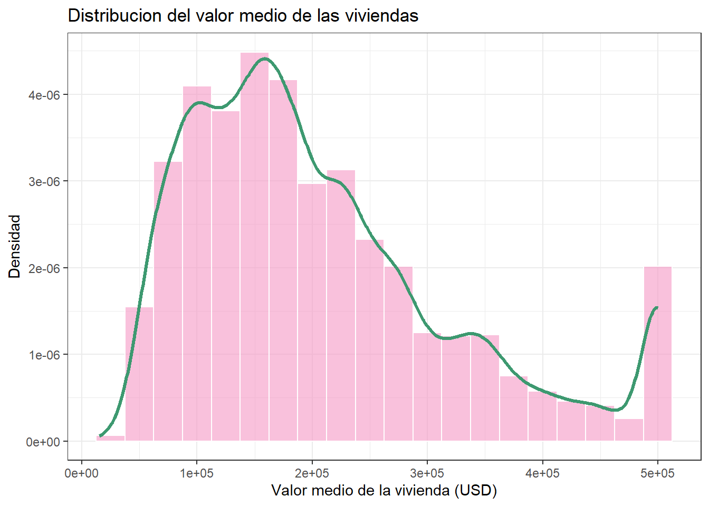
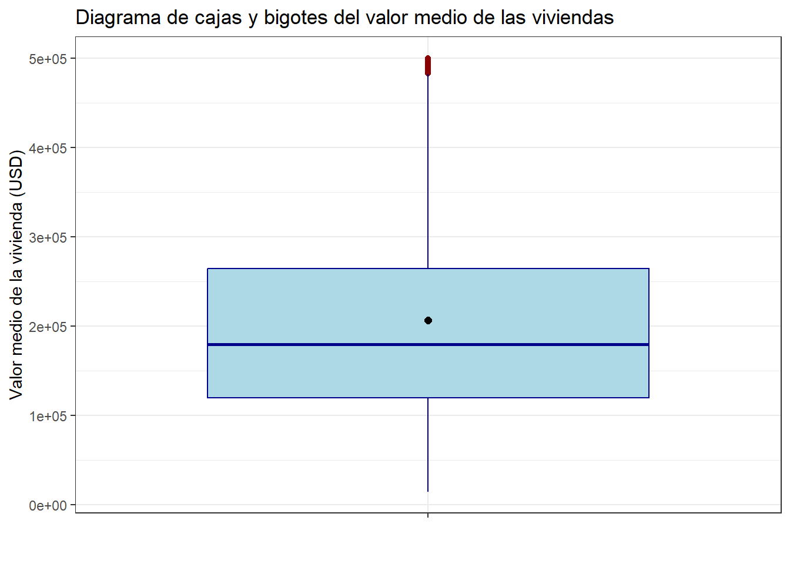
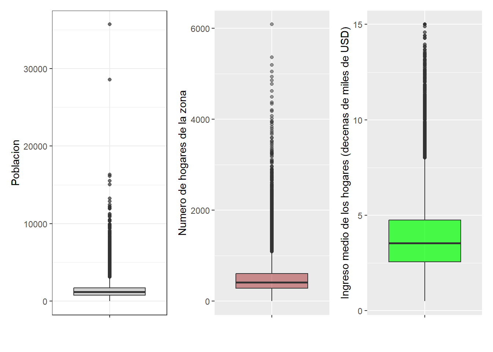
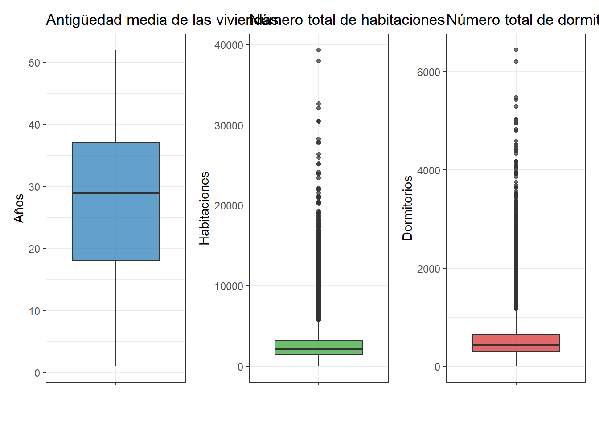
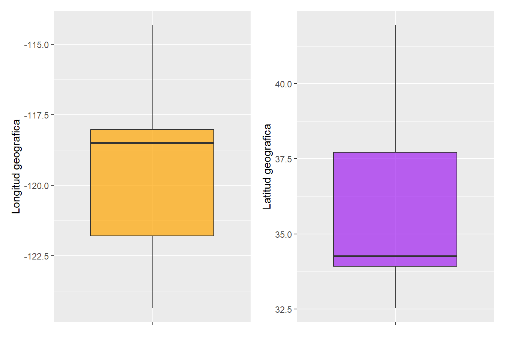
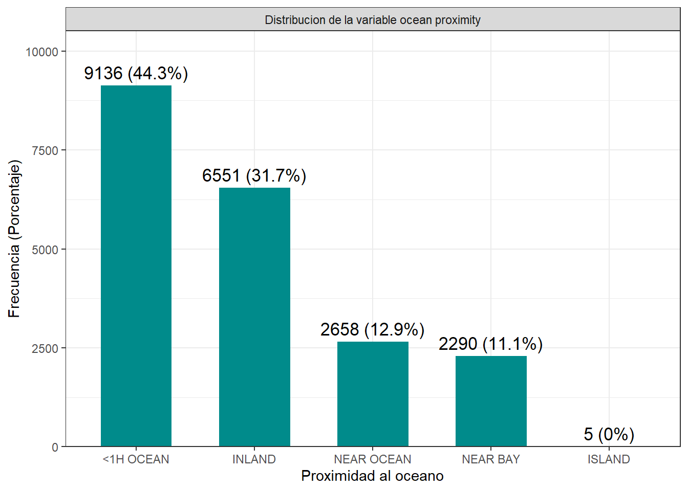

Capítulo: 3 Análisis exploratorio univariado
Con el análisis univariado se estudia cada variable de manera individual para conocer su distribución, valores centrales, valores atípicos y características como la dispersión y la asimetría
3.1 Variable Objetivo: Valor medio de las viviendas
En primer lugar, se analiza la variable objetivo median_house_value, la cual representa el valor medio de las viviendas en cada zona censal.
3.1.1 Medidas estadísticas
Calculemos algunas medidas estadísticas para resumir su comportamiento.
df %>% summarise (n = length(median_house_value),
media = mean(median_house_value),
sd = sd(median_house_value),
mediana = median(median_house_value),
RIC = IQR(median_house_value),
Q1 = quantile(median_house_value,0.25),
Q3 = quantile(median_house_value,0.75),
minimo = min(median_house_value),
maximo = max(median_house_value),
curtosis = kurtosis(median_house_value),
asimetria = skewness(median_house_value))## n media sd mediana RIC Q1 Q3 minimo maximo curtosis
## 1 20640 206855.8 115395.6 179700 145125 119600 264725 14999 500001 3.3275
## asimetria
## 1 0.9776922El conjunto cuenta con 20.640 observaciones. El valor medio de las viviendas es de 206.856 USD, mientras que la mediana es de 179.700 USD. Esta diferencia, junto con una asimetría de 0,98, indica que la distribución presenta un sesgo hacia valores altos. El 50 % central de las viviendas se encuentra entre 119.600 y 264.725 USD, mostrando una dispersión considerable. Además, los valores van desde 14.999 hasta 500.001 USD.
En general, median_house_value presenta alta variabilidad y una distribución moderadamente sesgada hacia la derecha.
3.1.2 Histograma
Ahora, para observar directamente la distribución, se utiliza un histograma acompañado de una curva de densidad.
df %>%
ggplot(aes(x = median_house_value)) +
geom_histogram(aes(y = after_stat(density)),
binwidth = 25000,
fill = "#F598C4",
color = "white",
alpha = 0.6) +
geom_density(color = "#3D9970", linewidth = 1.2) +
labs(
title = "Distribucion del valor medio de las viviendas",
x = "Valor medio de la vivienda (USD)",
y = "Densidad"
) +
theme_bw()
Se observa que la distribución se concentra principalmente entre 100.000 y 250.000 USD, con un pico alrededor de 150.000–175.000 USD. A partir de este rango, la frecuencia disminuye progresivamente,lo que indica asimetría positiva. También se observa una concentración importante de valores cerca de 500.000 USD, relacionada con el límite superior de los datos.El histograma confirma que los valores de las viviendas presentan una distribución asimétrica y una variabilidad considerable.
3.1.3 Diagrama de cajas y bigotes
Para complementar el histograma, se utiliza un diagrama de cajas y bigotes. Este permite visualizar la mediana, los cuartiles y los posibles valores atípicos.
df %>%
ggplot(aes(x = "", y = median_house_value)) +
geom_boxplot(fill = "lightblue", color = "darkblue", outlier.color = "darkred") +
stat_summary(
fun = mean,
geom = "point",
shape = 20,
size = 3,
color = "black"
) +
labs(
title = "Diagrama de cajas y bigotes del valor medio de las viviendas",
x = "",
y = "Valor medio de la vivienda (USD)"
) +
theme_bw()
El diagrama muestra que la mediana del valor de las viviendas se encuentra alrededor de 179.700 USD, mientras que el 50 % central de los datos se concentra aproximadamente entre 119.600 y 264.725 USD.Se observan varios valores atípicos en la parte superior, cercanos a los 500.000 USD de viviendas con valores considerablemente mayores al resto. Además, la posición de la media por encima de la mediana se explica por la asimetría positiva. Es decir, hay alta dispersión y sesgo hacia valores altos.
3.2 Variables Numéricas
Ya estudiada la variable objetivo, se analiza individualmente cada una de las demás variables del conjunto de datos antes de analizar las relaciones entre ellas. Empezemos con las variables numéricas.
3.2.1 Población, Hogares e Ingresos
Para conocer algunas características demográficas y socioeconómicas, se analizan las variables population , households y median_income. La variable population representa la cantidad de personas que habitan en cada zona, households indica el número de hogares registrados y median_income corresponde al ingreso medio de los hogares.
Representémoslas por medio de diagramas de cajas y bigotes:
G_population <- df %>%
ggplot(aes(x = "", y = population))+
geom_boxplot(fill = "grey", alpha = 0.7)+
labs(x = "", y = "Poblacion")+
theme_bw()G_households <- df %>%
ggplot(aes(x = "", y = households)) +
geom_boxplot(fill = "brown", alpha = 0.5) +
labs(x = "", y = "Numero de hogares de la zona")G_income <- df %>%
ggplot(aes(x = "", y = median_income)) +
geom_boxplot(fill = "green", alpha = 0.7) +
labs(x = "", y = "Ingreso medio de los hogares (decenas de miles de USD)")
G_population + G_households + G_income
En las variables population y households se observa una alta concentración de valores bajos y medios, así como numerosos valores atípicos en la parte superior. Por su parte, median_income presenta una distribución más concentrada, pero también se observan varios valores atípicos superiores.
En general, los tres diagramas muestran asimetría positiva debido a los datos atípicos. Es decir, la mayoría de las zonas presentan una población, número de hogares e ingresos moderados, pero algunas alcanzan valores considerablemente mayores.
3.2.2 Antiguedad, Habitaciones y Dormitorios
Para complementar, se analizan las variables housing_median_age, total_rooms y total_bedrooms. Estas representan la antigüedad de las viviendad, el número de habitaciones y el número de dormitorios respectivamente. Lo que caracterizar las viviendas según sus condiciones y su tamaño.
A continuación, los diagramas de caja y bigotes:
library(patchwork)
# Boxplot de housing_median_age
p1 <- df %>%
ggplot(aes(x = "", y = housing_median_age)) +
geom_boxplot(fill = "#1f77b4", alpha = 0.7) +
labs(
title = "Antigüedad media de las viviendas",
y = "Años",
x = ""
) +
theme_bw()
# Boxplot de total_rooms
p2 <- df %>%
ggplot(aes(x = "", y = total_rooms)) +
geom_boxplot(fill = "#2ca02c", alpha = 0.7) +
labs(
title = "Número total de habitaciones",
y = "Habitaciones",
x = ""
) +
theme_bw()
# Boxplot de total_bedrooms
p3 <- df %>%
ggplot(aes(x = "", y = total_bedrooms)) +
geom_boxplot(fill = "#d62728", alpha = 0.7) +
labs(
title = "Número total de dormitorios",
y = "Dormitorios",
x = ""
) +
theme_bw()
# Primera fila
p1 + p2 + p3 ## Warning: Removed 207 rows containing non-finite outside the scale range
## (`stat_boxplot()`).
La variable housing_median_age presenta una distribución más equilibrada que las variables relacionadas con el número de habitaciones. La mayor parte de las zonas tiene una antigüedad media entre 18 y 37 años, con una mediana cercana a los 29 años, sin datos particularmente atípicos.
Por otro lado, tanto total_rooms como total_bedrooms presentan una marcada asimetría positiva. La mayoría de las observaciones se concentra en valores relativamente bajos, mientras que existen muchos valores atípicos superiores. Esto indica que algunas zonas cuentan con una cantidad de habitaciones considerablemente mayor que la mayoría.
También se observa que las dos variables tienen un comportamiento similar, lo que sugiere una relación, ya que las viviendas con un mayor número total de habitaciones suelen tener también más dormitorios.
3.2.3 Coordenadas geográficas
Las variables latitude y longitude permiten identificar la ubicación geográfica de cada zona del conjunto de datos. Esta ubicación puede estar relacionada con otras condiciones de la zona y, posteriormente, con el valor de las viviendas.
G_long <- df %>%
ggplot(aes(x="", y=longitude))+
geom_boxplot(fill="orange", alpha=0.7)+
labs(x="", y="Longitud geografica")
G_lat <- df %>%
ggplot(aes(x="", y=latitude))+
geom_boxplot(fill="purple", alpha=0.7)+
labs(x="", y="Latitud geografica")
G_long + G_lat
Los diagramas de cajas permiten observar el rango y la concentración de los valores de latitud y longitud. Aunque a diferencia de otras variables del conjunto, como las coordenadas representan posiciones geográficas, sus valores deben interpretarse como ubicaciones y no como cantidades que puedan considerarse altas o bajas.Ambas variables muestran una dispersión similar con asimetrías opuestas. La longitud es asimétrica negativamente (hacia el este) y la latitud lo es positivamente (hacia el sur), lo que sugiere que las viviendas se concentran en el sureste de California.
3.2.4 Resumen
resumen_numericas <- df %>%
select(where(is.numeric), -median_house_value) %>%
pivot_longer(
cols = everything(),
names_to = "variable",
values_to = "valor"
) %>%
group_by(variable) %>%
summarise(
n = sum(!is.na(valor)),
media = mean(valor, na.rm = TRUE),
ds = sd(valor, na.rm = TRUE),
mediana = median(valor, na.rm = TRUE),
minimo = min(valor, na.rm = TRUE),
maximo = max(valor, na.rm = TRUE),
Q1 = quantile(valor, 0.25, na.rm = TRUE),
Q3 = quantile(valor, 0.75, na.rm = TRUE),
IQR = IQR(valor, na.rm = TRUE),
.groups = "drop"
)
resumen_numericas## # A tibble: 8 × 10
## variable n media ds mediana minimo maximo Q1 Q3 IQR
## <chr> <int> <dbl> <dbl> <dbl> <dbl> <dbl> <dbl> <dbl> <dbl>
## 1 househol… 20640 500. 3.82e2 409 1 6082 280 605 3.25e2
## 2 housing_… 20640 28.6 1.26e1 29 1 52 18 37 1.9 e1
## 3 latitude 20640 35.6 2.14e0 34.3 32.5 42.0 33.9 37.7 3.78e0
## 4 longitude 20640 -120. 2.00e0 -118. -124. -114. -122. -118. 3.79e0
## 5 median_i… 20640 3.87 1.90e0 3.53 0.500 15.0 2.56 4.74 2.18e0
## 6 populati… 20640 1425. 1.13e3 1166 3 35682 787 1725 9.38e2
## 7 total_be… 20433 538. 4.21e2 435 1 6445 296 647 3.51e2
## 8 total_ro… 20640 2636. 2.18e3 2127 2 39320 1448. 3148 1.70e33.3 Variables Categóricas
Ya que analizamos las variables numéricas, continuemos con las categóricas.
3.3.1 Proximidad al océano
En este caso la única variable categórica es ocean_proximity, la cual clasifica las zonas censadas según su proximidad al océano en:
- A menos de una hora del océano
- Interior / Zona continental
- En una isla
- Cerca de la bahía
- Cerca del océano
Veamos una tabla de frecuencias:
df %>%
count(ocean_proximity, name = "n") %>%
mutate(Porcentaje = round((n/sum(n))*100,2),
Variable = 'ocean_proximity',
Categoria = as.character(ocean_proximity)) %>% select(Variable,Categoria,n,Porcentaje) -> tabla_ocean
tabla_ocean## Variable Categoria n Porcentaje
## 1 ocean_proximity <1H OCEAN 9136 44.26
## 2 ocean_proximity INLAND 6551 31.74
## 3 ocean_proximity ISLAND 5 0.02
## 4 ocean_proximity NEAR BAY 2290 11.09
## 5 ocean_proximity NEAR OCEAN 2658 12.88Asimismo, representamos en un gráfico de barras:
df %>%
count(ocean_proximity, name = "Frecuencia") %>%
mutate(
Porcentaje = round(Frecuencia / sum(Frecuencia) * 100, 1),
Etiqueta = paste0(Frecuencia, " (", Porcentaje, "%)")) -> tabla_ocean_b
tabla_ocean_b %>%
ggplot(aes(x = reorder(ocean_proximity, -Frecuencia), y = Frecuencia))+
geom_col(fill = "#008B8B", width = 0.6)+
geom_text(aes(label = Etiqueta), vjust=-0.5, size=4.5)+
labs(x = "Proximidad al oceano", y = "Frecuencia (Porcentaje)") +
facet_wrap(~'Distribucion de la variable ocean proximity')+
scale_y_continuous(expand = expansion(mult=c(0,0.15)))+
theme_bw()
En las anteriores representaciones se logra ver que la variable ocean_proximity muestra una clara concentración en dos categorías principales que abarcan más del 76% de la muestra: las viviendas ubicadas a menos de una hora del océano (44.26%) y las situadas en el interior o zona continental).
Por su parte, las categorías cerca al océano y cerca a la bahía registran proporciones moderadas y bastante parecidas entre sí, entre el 11% y el 13%. Finalmente, la categoría de viviendas en islas resulta estadísticamente insignificante, representando apenas el 0.02% de las viviendas.